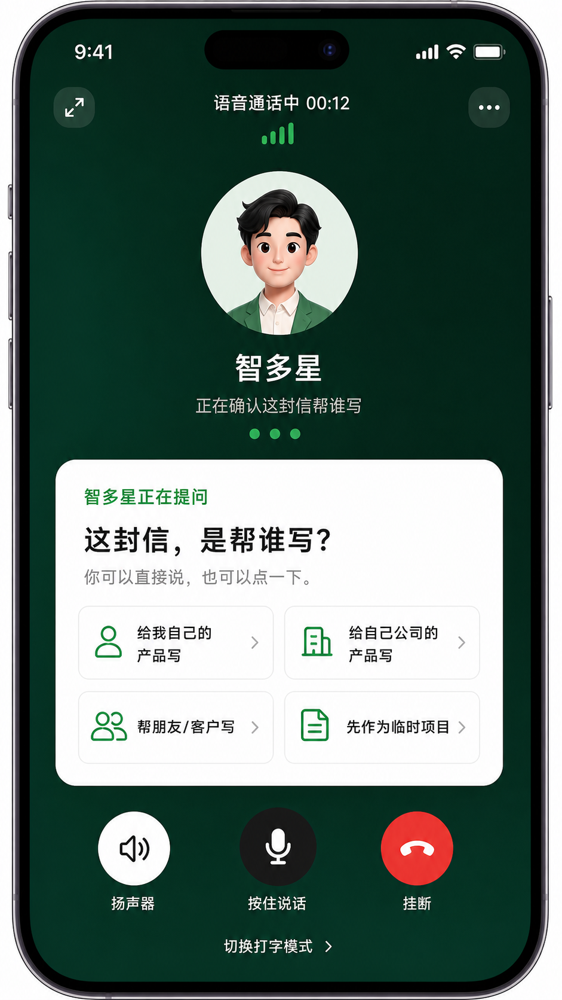
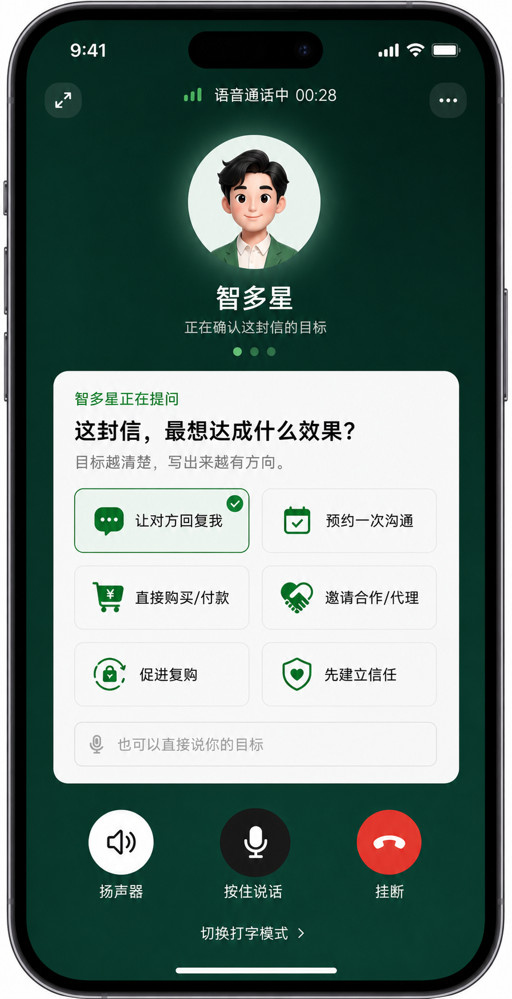
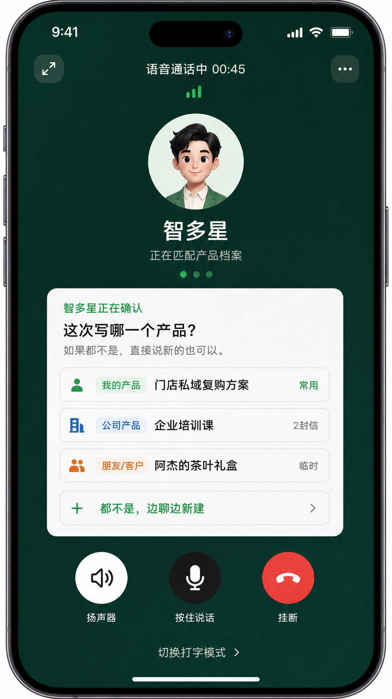
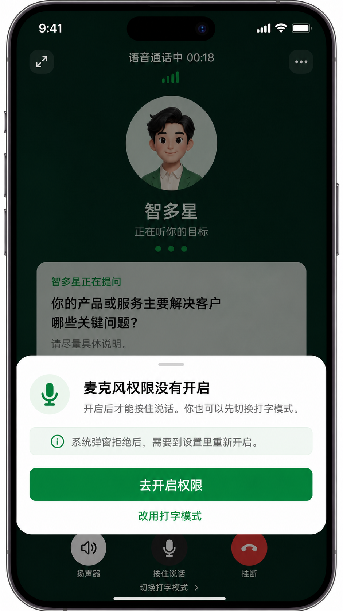
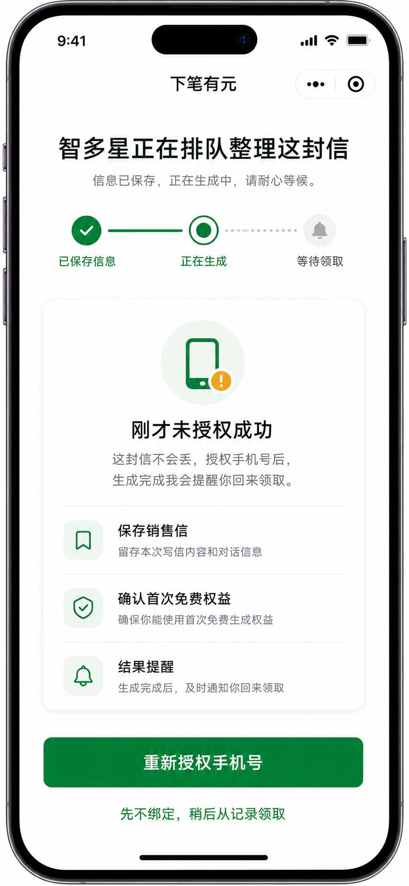
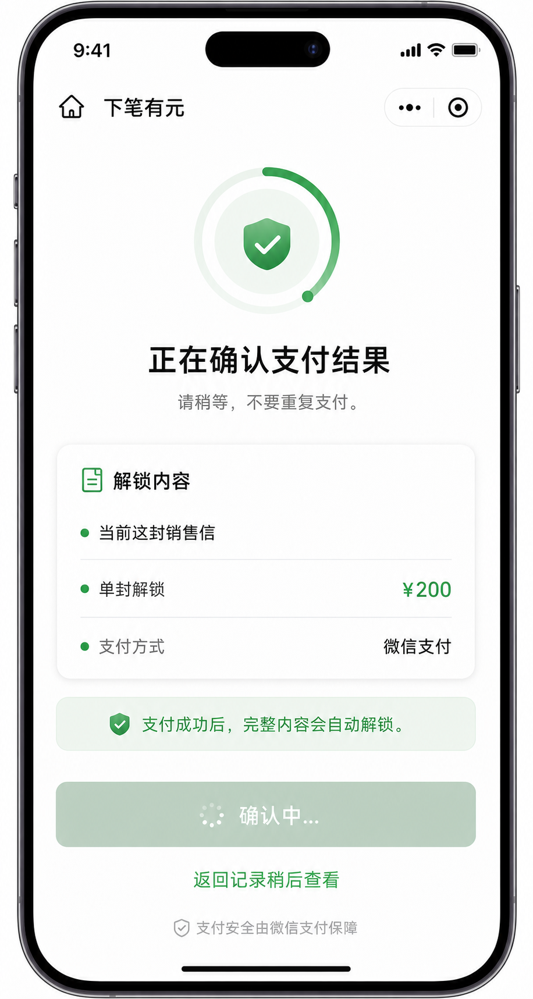
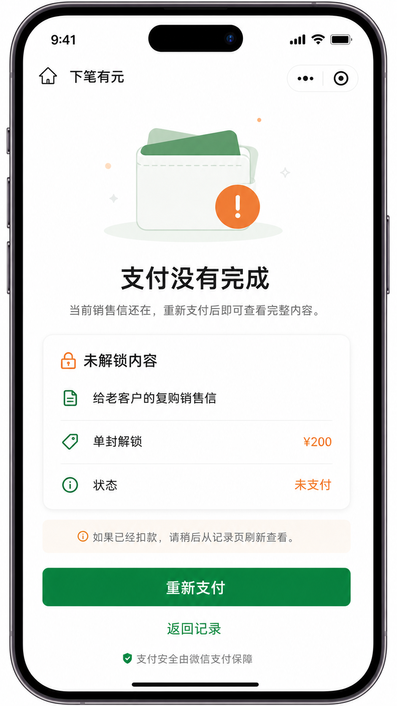
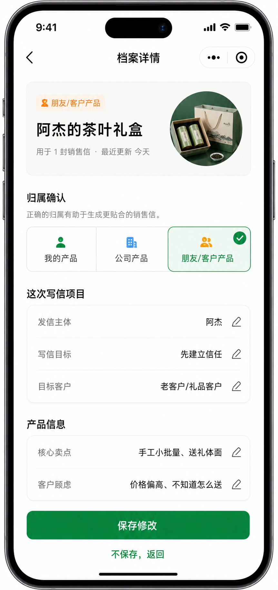
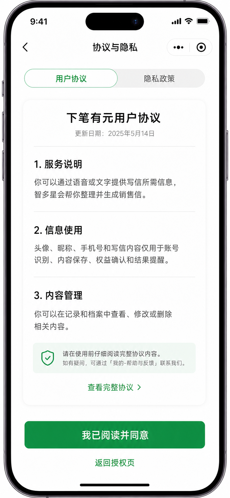
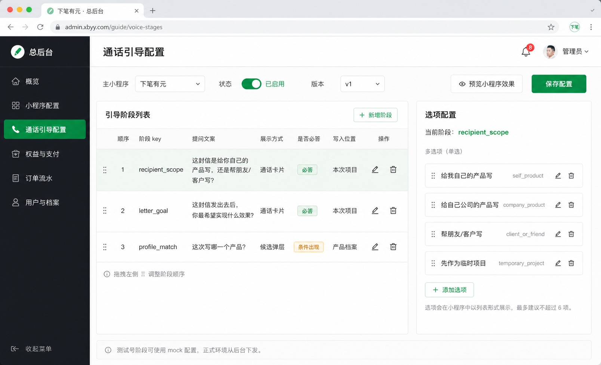

下笔有元 UI 补齐审核稿 v4
本页只放这次新增和重构的页面：通话页内引导 3 张、一期必须补齐的用户端兜底状态 6 张、总后台通话引导配置 1 张。已确认不变的主流程页面仍看 v3。
A. 修改后的通话内引导
原来的“帮谁写 / 写信目标 / 产品档案选择”不再作为三连跳转页，而是进入语音通话后，以问题卡片和快捷选项的形式出现。
20
通话页内引导：这封信帮谁写

21
通话页内引导：写信目标

22
通话页内引导：产品档案匹配

B. 一期需要补齐的用户端 UI
这些不是新增独立路由，而是主页面里的兜底状态。麦克风先走微信系统授权弹窗，拒绝后才出现通话页弹层；手机号失败状态发生在排队生成页内部。
23
通话页弹层：麦克风权限被拒后

24
生成页状态：手机号授权失败

25
支付处理中

26
支付失败 / 取消

27
档案详情 / 归属纠错

28
用户协议 / 隐私政策

C. 总后台配置 UI
正式环境中，通话引导问题、选项、顺序、是否必答和写入位置应从总后台下发。测试号阶段可以先用 mock 配置。
29
总后台：通话引导配置
